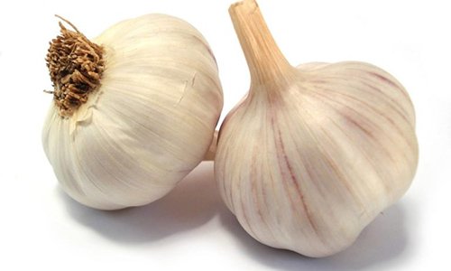
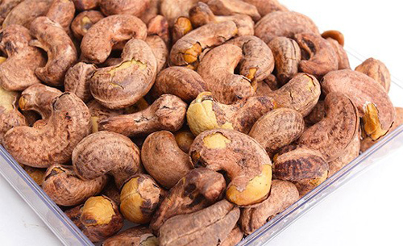

Khoai tây được bảo quản tốt nhất trong môi trường mát mẻ, râm mát, nhưng nhiệt độ trong tủ lạnh thì quá lạnh. Hơi lạnh sẽ phá vỡ chất tinh bột trong khoai tây, gây ra kết cấu cứng, thô, gây khó chịu khi ăn.
Thành phần tinh bột cũng bắt đầu chuyển sang đường khi để trong tủ lạnh, ảnh hưởng đến hương vị.
2.Hành tâyKhi để trong tủ lạnh, hành sẽ bị hỏng nhanh hơn so với khi để ở ngoài. Tốt nhất là nên để nó ở nhiệt độ phòng, tránh để ra ngoài ánh mặt trời trực tiếp.
3.TỏiTỏi sẽ bị mất hương vị nếu để trong tủ lạnh. Để duy trì hương vị cay nồng, hãy để nó trong một hộp chứa khô ráo, thoáng mát, thông gió. Tốt nhất hãy sử dụng chúng trong khoảng 10 ngày.
 4.Dưa hấuCác loại dưa như dưa hấu đỏ, vàng... ngon nhất khi được bảo quản ở nhiệt độ phòng. Một số nghiên cứu còn cho rằng dưa hấu làm lạnh sẽ làm giảm hàm lượng chất oxy hóa, khiến chúng hỏng nhanh hơn. Do đó, để nhiệt độ phòng sẽ khiến dưa ngon hơn. Sau khi cắt nếu vẫn còn thừa, bạn mới nên bảo quản dưa trong tủ lạnh thời gian ngắn
5.Mật ongMật ong sẽ đông lại khi để trong tủ lạnh. Nó trở nên cứng, vì vậy rất khó để sử dụng. Mật ong có thể để trong thời gian dài miễn là để ở nhiệt độ phòng. Nếu lỡ để trong tủ lạnh, bạn có thể làm cho nó tan ra bằng cách đặt chai trong nước ấm.
6.Bánh mìBánh mỳ nói chung rất dễ hỏng. Nhiều người đặt nó trong tủ lạnh để ngăn chặn sự phát triển của nấm mốc. Nhưng bánh mỳ khi làm lạnh sẽ bị khô, và không còn ngon.
7.Các loại hạtKhi để trong tủ lạnh, các loại hạt có xu hướng bị mất hương vị, và nó dễ hấp thụ mùi của các thực phẩm khác trong tủ lạnh. Nên để các loại hạt trong một hộp kín ở nhiệt độ phòng. Nếu đã lỡ cho trong tủ lạnh, bạn có thể cho chúng vào chảo, đảo lại một chút trước khi ăn.
 8.Cà phêLàm lạnh hạt cà phê sẽ làm cho nước tụ lại trong hạt, khiến hương vị thay đổi nhiều. Thay vào đó, hãy để chúng trong hộp kín ở nhiệt độ phòng
9.Cà chuaTrong khi nhiều thực phẩm nên để trong tủ lạnh, cà chua tốt nhất nên để bên ngoài, nếu không muốn vỏ bị nhăn nheo, ảnh hưởng chất lượng dinh dưỡng của quả.
Nếu cà chua chưa chín, hãy đặt nó trên bệ cửa sổ đầy nắng. Nếu chúng bắt đầu chín quá nhanh, hãy dùng để nấu ngay, hoặc lúc này mới cho vào bảo quản tủ lạnh.
10.TáoKhông nhất thiết phải để táo trong tủ lạnh. Làm lạnh có xu hướng phá vỡ độ giòn của táo. Bạn nên để táo trên bàn ở nhiệt độ bình thường.
11.BơBơ sẽ không ngon khi chúng quá cứng hoặc quá mềm. Ăn một quả bơ chưa chín giống như cắn vào một củ khoai tây sống. Bơ quá chín lại nhão, và biến đổi hương vị.
Không nên cho vào tủ lạnh từ đầu, chỉ nên làm lạnh nếu bạn thấy nó đã chín nhưng chưa có nhu cầu sử dụng luôn. Bạn có thể để trong tủ lạnh thêm vài ngày.
12.MậnCác loại trái cây như mận, đào, mơ chín tốt nhất nên để nhiệt độ phòng. Lý tưởng là để chúng trong một túi giấy. Tuy nhiên, nếu trái cây đã quá chín nhưng không thể ăn nó ngay lập tức, cho vào tủ lạnh giúp bạn giữ cho chúng không bị nhũn trong 2-3 ngày.